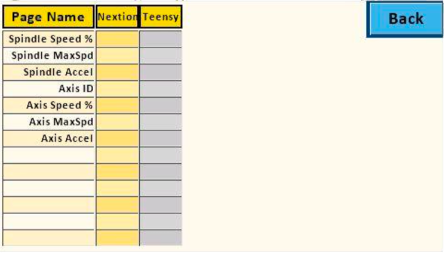

Touch the buttons on the screen image to the right to see the details for the that screen.
Purpose: Additional options are managed on this preferences screen.
Screen Brightness slider may be used to change the brightness of the screen.
Cutter Motor Pin This is the pin number used for cutting the power on the overhead drive when the limit of travel has been reached. This function is still in development.
More informataion about this is at Auxiliary Pin Function.
Keep Steppers Enabled
This is used to set the stepper motors to be continuously Disabled or Enabled.
- If you are using DM542T stepper motor drivers, this needs to be Enabled for any operations where repeated movement relies on the current position being correct. One example is indexing. If this is not set for indexing, the movement will be off with each individual index.
- If you are using the DRV8825 stepper motor drivers, it can be set either way.
|
|
This button shows the values stored in EEPROM on both the Nextion and Teensy. It is used to verify the settings match. Mismatches can occur when updating the software.
|

|
|
This button will load motor settings from an ini file. Restarting the program may be necessary for the settings to be active.
|